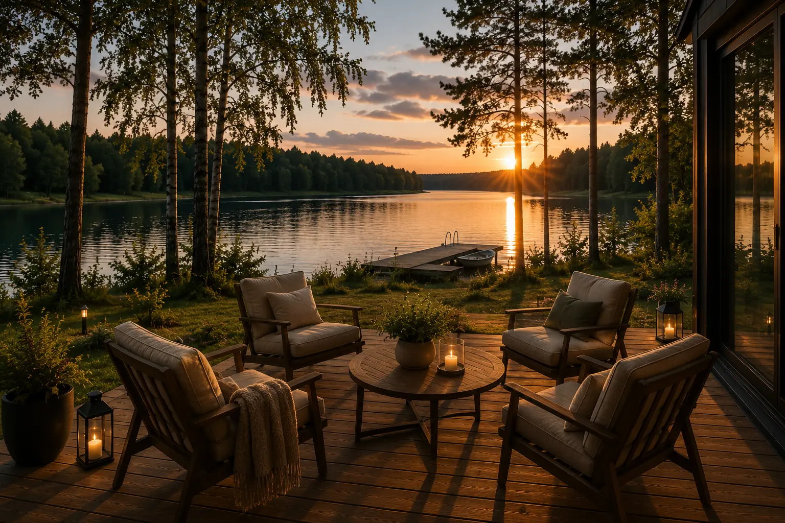
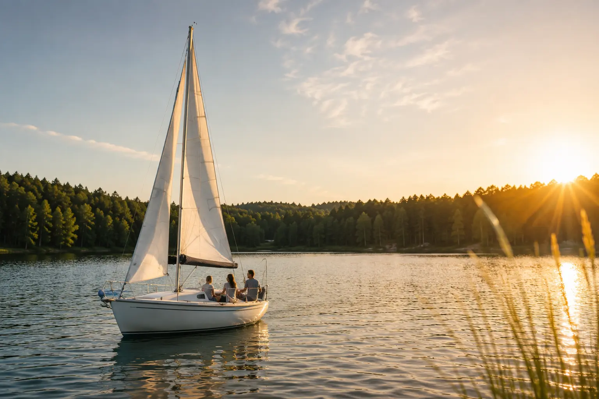
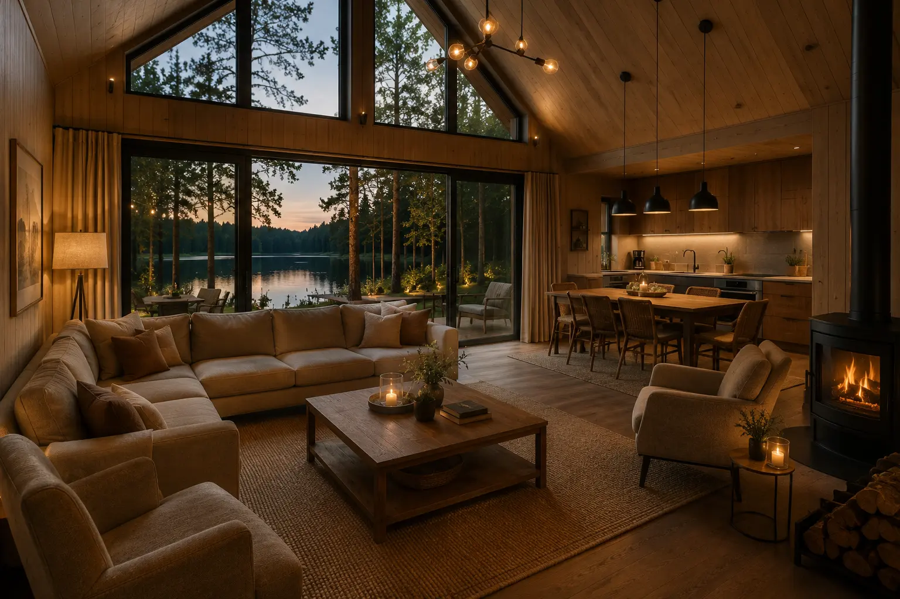
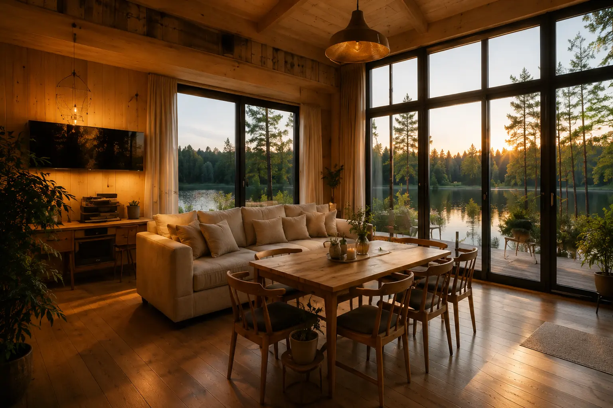
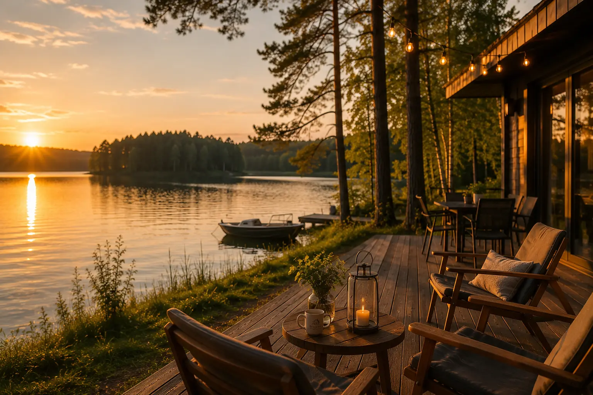

Jeden dom
Pełna niezależność dla maksymalnie 10 osób, własna kuchnia, salon, cztery sypialnie i trzy łazienki.
Najczęściej wybierany przez rodziny
Oferta przez cztery pory roku
Jeden dom dla rodziny, dwa domy dla grupy i jezioro zawsze w pierwszej linii. Porównaj sezony, poznaj orientacyjne ceny i ułóż pobyt po swojemu.
Prosto i elastycznie
Każdy dom mieści do 10 osób. Możesz wynająć jeden dla rodziny albo oba na spokojny wyjazd większej grupy. Cena zależy od sezonu, terminu, długości pobytu i liczby gości.
Pełna niezależność dla maksymalnie 10 osób, własna kuchnia, salon, cztery sypialnie i trzy łazienki.
Najczęściej wybierany przez rodzinyCały obiekt dla grupy do 20 osób — blisko siebie, ale z przestrzenią i prywatnością dla każdej części grupy.
Wygodny dla rodzin i przyjaciół Zawsze w ofercie
Zawsze w ofercieCztery odsłony Jeziora Krzywe
Wybierz porę roku, aby zobaczyć klimat pobytu, orientacyjne widełki za jeden dom i najważniejsze elementy danego wariantu.
 Wiosna nad wodą
Wiosna nad wodąSezon na spokojne weekendy, pierwsze długie wieczory na tarasie i aktywne odkrywanie Mazur bez letniego rytmu.

Lato nad wodąBezpośredni dostęp do linii brzegowej oraz pomostu i cały dzień prowadzony przez wodę. To najbardziej intensywny sezon, dlatego warto pytać o termin wcześniej.
 Jesień nad wodą
Jesień nad wodąIdealny czas na weekend poza miastem, rozmowy przy ogniu i Mazury, które nie potrzebują wakacyjnego zgiełku.

Zima nad wodąJezioro oglądane z ciepłego wnętrza, wspólne posiłki i czas, który zwalnia. Wariant na weekendy oraz świąteczne i noworoczne terminy.
Widełki są orientacyjne. Dokładną cenę potwierdzamy indywidualnie po sprawdzeniu terminu, długości pobytu, liczby gości i wybranego wariantu domu. Zapytanie nie zobowiązuje do rezerwacji.
Dla kogo?
Układ dwóch niezależnych domów pozwala dobrać skalę pobytu bez rezygnowania z prywatności.

Cztery sypialnie i trzy łazienki ułatwiają wspólny pobyt bez porannej kolejki. Kuchnia i salon zbierają wszystkich razem, a bezpośredni dostęp do linii brzegowej zaczyna się tuż za tarasem.

Wynajem całego obiektu daje grupie do 20 osób własną przestrzeń nad wodą. Każda część grupy ma niezależny dom, a tarasy i brzeg pozostają wspólnym sercem pobytu.
Wi-Fi, całoroczne wnętrza i spokojniejsze miesiące tworzą dobre warunki do dłuższego pobytu. Po zamknięciu laptopa zostaje taras, brzeg i mazurska cisza.
W standardzie pobytu
Domy są przygotowane zarówno na wakacyjny tydzień, jak i krótki wyjazd poza sezonem. Najważniejszym udogodnieniem pozostaje jednak bezpośredni dostęp do jeziora.
Jezioro Krzywe bez pakowania samochodu i szukania publicznej plaży.
Kuchnia, salon, cztery sypialnie i trzy łazienki w każdym domu.
Bezpłatny internet na codzienne potrzeby i spokojny workation.
Przestrzeń na długie wieczory i wspólny czas przy ogniu.
Do 10 osób w jednym domu albo do 20 osób w dwóch domach.
Całoroczne wnętrza pozwalają wracać nad wodę w każdym sezonie.

Zasady pobytu
Najważniejsze informacje podajemy przed wysłaniem zapytania, aby każdy mógł świadomie wybrać Krzywe Lake Houses.
Masz pytanie? Napisz do nasDom przygotowujemy tak, aby od pierwszej chwili można było spokojnie rozpocząć pobyt.
Prosimy o opuszczenie domu do godziny 11:00 w dniu zakończenia pobytu.
Palenie papierosów i wyrobów tytoniowych wewnątrz domów jest zabronione.
Ze względu na zasady obiektu nie przyjmujemy gości podróżujących ze zwierzętami.
Najczęstsze pytania
Zebraliśmy najważniejsze odpowiedzi dotyczące ceny, liczby gości, zasad i sposobu rezerwacji.
505 586 950Nie. Podane kwoty to orientacyjne widełki za jeden dom i jedną noc. Dokładną cenę potwierdzamy po sprawdzeniu terminu, długości pobytu, liczby gości i wybranego wariantu.
Każdy dom mieści maksymalnie 10 osób. Wynajmując oba domy, można zapytać o pobyt grupy do 20 osób.
Jeszcze nie. Obecnie przycisk prowadzi do formularza zapytania. Rezerwacja staje się potwierdzona dopiero po naszej odpowiedzi i uzgodnieniu szczegółów. W przyszłości w tym miejscu pojawi się channel manager.
Nie. Krzywe Lake Houses nie przyjmuje zwierząt.
Nie. Wnętrza obu domów są przestrzenią bezdymną i obowiązuje w nich zakaz palenia.
Zameldowanie jest możliwe od godziny 16:00, a wymeldowanie odbywa się do godziny 11:00.
Masz już swój wariant?
Wybierz daty, liczbę gości i najważniejsze elementy pobytu. Odpowiemy z dostępnością i dokładną ceną.
Obecnie przycisk otwiera formularz zapytania. Integracja z channel managerem jest przygotowana jako kolejny etap.